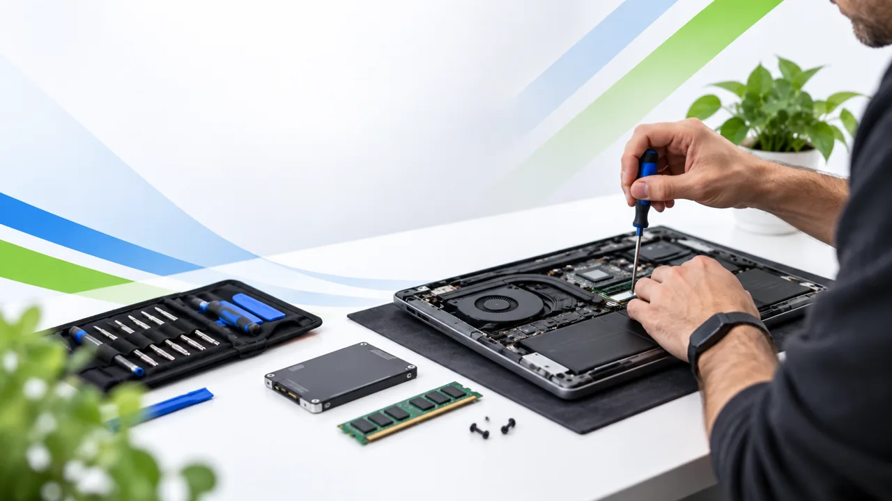

Mantenimiento PC
Limpieza interna, revisión visual, ventiladores y cambio de pasta térmica.
Desde $650 MXNMantenimiento, reparación y mejoras para trabajar, jugar y transmitir. Atención clara, desde el diagnóstico hasta la puesta a punto.

Precios de referencia. Antes de realizar cambios se confirma el diagnóstico y el costo final.
Limpieza interna, revisión visual, ventiladores y cambio de pasta térmica.
Desde $650 MXNLimpieza interna, sistema de refrigeración y cambio de pasta térmica.
Desde $800 MXNInstalación limpia, drivers, actualizaciones y configuración inicial.
Desde $700 MXNInstalación de componentes, compatibilidad y validación de funcionamiento.
Desde $300 MXNMigración de Windows y datos a SSD/HDD nuevo, cuando el sistema lo permite.
Desde $500 MXNDiagnóstico de arranque, almacenamiento, Windows, BIOS/UEFI y componentes.
Desde $600 MXNTemperaturas, procesos, drivers, energía y configuración para mejorar estabilidad.
Desde $500 MXNEnsamble, cable management, BIOS, pruebas básicas y validación de hardware.
Desde $900 MXNEscenas, audio, micrófono, alertas, Spotify y configuración según tu equipo.
Desde $600 MXNElige una base y personalizamos el servicio según tu hardware y lo que realmente necesites.
Desde una limpieza a fondo hasta un setup listo para transmitir. Imágenes ilustrativas de los servicios.

Limpieza y refrigeración para tu PC.

Revisión interna y mejoras de hardware.

Configuración de OBS, escenas y audio.

Ensamble, compatibilidad y puesta a punto.
Genera una solicitud clara en menos de un minuto. El precio mostrado es orientativo y puede cambiar después del diagnóstico.
Cuando el diagnóstico requiere desarmado, pruebas prolongadas o investigación específica, se confirma primero si tendrá costo y cuánto será.
Se evita modificar información personal sin autorización. Si el servicio implica formateo o riesgo para los datos, se recomienda respaldo antes de comenzar.
Sí. También puedo ayudarte a revisar compatibilidad antes de comprar RAM, SSD, fuente, GPU u otros componentes.
Sí, para problemas de software y configuración que no requieran intervención física. Primero se confirma si tu caso puede resolverse a distancia.
Sí. Se pueden revisar temperaturas, estabilidad, drivers, upgrades, armado y configuración general orientada a gaming.
El asistente reúne los datos de tu equipo y genera un folio. Después de revisar tu solicitud, se habilita un medio de contacto cuando corresponda.